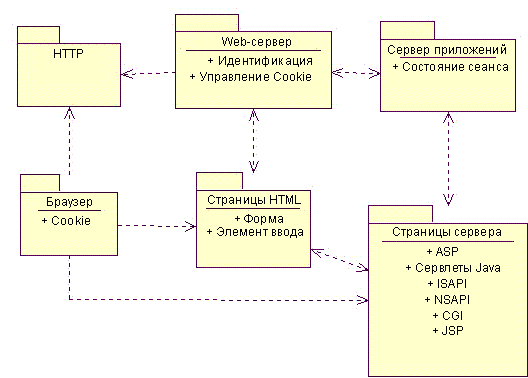
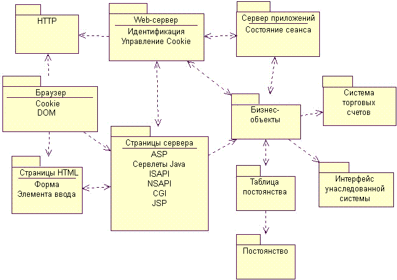
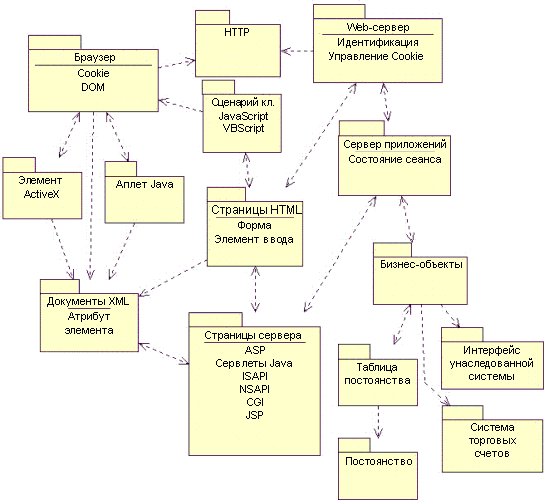
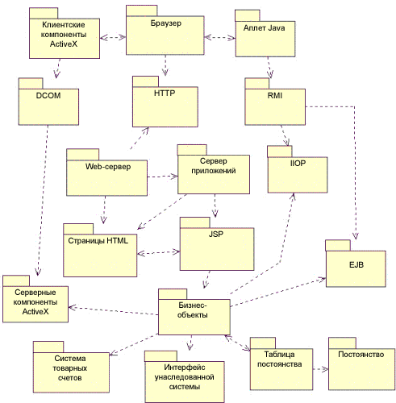

| Концепция: Шаблоны Web-архитектуры |
 |
|
| Связанные элементы |
|---|
ВведениеНиже перечислены три наиболее распространенных шаблона: Простой Web-клиент - чаще всего применяется с приложениями Internet, где невозможно управлять конфигурацией клиента. Для клиента требуется только обычный Web-браузер, способный обрабатывать формы. Вся бизнес-логика выполняется на сервере. Расширенный Web-клиент - Значительная часть бизнес-логики выполняется в системе клиента. Обычно клиент применяет для работы с бизнес-логикой динамический HTML, аплеты Java или элементы ActiveX. Обмен данными с сервером по-прежнему осуществляется по протоколу HTTP. Web-доставка - Наряду с протоколом HTTP для поддержки распределенной системы объектов, включающей и клиент, и сервер, могут применяться такие протоколы как IIOP и DCOM. Web-браузер главным образом выступает как агент хранения и доставки объектов в распределенной системе. Этот список не может считаться полным, особенно в отрасли, переживающей технологические революции чуть ли не каждый год. Это общая схема шаблонов Web-приложений, которые могут использоваться совместно в разных условиях. Простой Web-клиентАрхитектура простого Web-клиента применяется для приложений Internet, в которых невозможно управление конфигурацией клиента. Вся бизнес-логика выполняется на сервере, который обслуживает запросы браузера клиента. Условия примененияЭтот шаблон подходит для Web-приложений в Internet или средах, где клиент обладает малыми вычислительными ресурсами, или управление конфигурацией клиента невозможно. Известные случаи примененияС этим шаблоном работают большинство приложений электронной коммерции в Internet, поскольку было бы неправильно закрывать доступ клиентам только потому, что у них недостаточные вычислительные мощности. Электронная коммерция старается угодить всем покупателям, поскольку деньги в кошельке пользователя Commodore Amiga ничем не хуже денег пользователя Windows NT. СтруктураОсновные компоненты архитектуры тонкого Web-клиента размещаются на сервере. Можно сказать, что такая архитектура - это минималистическая архитектура Web-приложения. Ее основные компоненты таковы: Браузер клиента - Любой браузер с поддержкой форм HTML. Браузер работает как универсальное устройство пользовательского интерфейса. В архитектуре простого клиента он выполняет еще функции по отправке и приему cookie. Пользователь просматривает в браузере страницы Web. Эти страницы включают в себя все компоненты пользовательского интерфейса, текст и элементы управления, которые браузер отображает на экране монитора. Все взаимодействие пользователя с системой идет через браузер. На рисунке показана схема архитектуры простого Web-клиента.  Минимальная архитектура простого Web-клиента Минимальная архитектура простого Web-клиента не включает некоторые компоненты, которые обычно используются в Web-приложениях, такие как база данных. Часто Web-приложения работают с базой данных как с хранилищем информации. В некоторых ситуациях база данных может хранить и сами страницы, но такой вариант соответствует другой архитектуре. Поскольку Web-приложения могут применять различные технологии хранения данных, этот архитектурный компонент называется более общим термином: хранилище. Компонент хранилища также может включать монитор обработки транзакций (TPM). В простом варианте сценарии на сервере обращаются напрямую к компоненту хранилища. Даже в таком варианте прямой доступ требует стандартных библиотек доступа к данным, например, RDO, ADO, ODBC, JDBC, DBLib. Поэтому сценарии должны знать о том, какая схема базы данных применяется. Сценарии создают запросы SQL и получают данные из базы данных. В небольших Web-приложениях этого бывает достаточно. Для более объемных и надежных систем оказывается целесообразным выделить бизнес-логику в отдельный блок. Бизнес-логика реализуется в компоненте бизнес-объекта. Этот компонент обычно компилируется и выполняется на сервере приложений. Наличие такого архитектурного компонента, как бизнес-объект, обеспечивает возможность другим системам работать с ним, если применяется та же бизнес-логика. Например, для обработки запросов покупателей Internet-магазин может применять сценарии на сервер и архитектуру простого Web-клиента, но бухгалтерии этого будет недостаточно, и вместо этого будет применяться клиент-серверная система. При этом бухгалтерия будет работать с теми же бизнес-компонентами на сервере приложений, но клиентское программное обеспечение будет более функциональным. Поскольку база данных используется в большинстве решений для бизнеса, между сервером и базой данных обычно устанавливается дополнительный компонент архитектуры. Он обеспечивает преобразование бизнес-объектов в запросы к базам данных. Этот уровень может быть реализован различными способами, и он не будет здесь обсуждаться. Часто в эту архитектуры включаются другие компоненты, такие как интеграция с действующими системами или платежная система. Доступ к ним осуществляется посредством бизнес-объектов или сервера приложений этих систем, без формального компонента бизнес-объекта. Действующей системой может быть система бухгалтерского учета или система планирования производства. Платежная система позволяет принимать и обрабатывать платежи кредитной карточкой в Internet. Для небольших компаний, которые хотят открыть бизнес в сети, существует много разных платежных систем. Для крупных компаний этот компонент скорее всего будет интерфейсом к уже существующей системе обработки платежей кредитными картами. С учетом этих компонентов логическая схема архитектуры простого клиента становится более полной. Она показана на рисунке.  Логическая схема простого Web-клиента Большинство компонентов сервера Web-приложений могут быть найдены и для приложений, не основанных на Web. Схема и архитектура базовой программы Web-приложения мало чем отличается от схемы любой системы мейнфрейма или клиент-серверной. Web-приложения работают с базами данных и мониторами обработки транзакций (TPM) также, как другие системы. Например, технологии Enterprise Java Beans (EJB) и Microsoft Transaction Server (MTS) проектировались для Web-приложений, но они в равной степени применимы и в других архитектурах приложений. Архитектура серверных компонентов Web-приложений является общей для любых клиент-серверных систем. В данном обзоре мы ограничимся только обсуждением компонентов, применяющихся для Web-приложений, и не будем касаться возможных архитектур базовых программ на сервере. ДинамикаОсновным фактором, определяющим динамику этого шаблона архитектуры, является выполнение бизнес-логики только в ответ на запрос клиента. Клиенты работают с системой, запрашивая Web-страницы с Web-сервера по протоколу HTTP. Если страница - это обычный файл HTML в файловой системе сервера, то Web-сервер отправляет его клиенту. Если страница содержит сценарии, которые должны быть выполнены перед отправкой ответа клиенту, то Web-сервер передает управление серверу приложений. Сервер приложений выполняет сценарии и при необходимости обращается к прочим ресурсам сервера, таким как базы данных, почта, действующие системы и пр. Код сценария имеет доступ к особой информации, сопровождающей запрос страницы. Эта информация содержит данные форм, введенные пользователем, и параметры, вложенные в запрос. Конечным результатом обработки является отформатированная страница HTML, отправляемая клиенту. Страница может также передана для обработки исполняемому модулю, такому как ISAPI или NSAPI DLL. DLL - это скомпилированная библиотека, которая может загружаться для выполнения сервером приложений. Этот модуль может работать с теми же данными запроса (полями формы и параметрами), что и сценарии. Таким образом, бизнес-логика вызывается только в ходе обработки запроса. По завершении обработки запроса клиенту отправляется результат, и соединение между клиентом и сервером закрывается. Иногда бизнес-процесс может не закрываться после выполнения запроса, но это скорее будет исключением. ВыводыТакая архитектура лучше всего подходит для приложений, в которых ответ сервера выполняется за приемлемое время, как для пользователя, так и для браузера клиента. Обычно это время - не более нескольких секунд. Эта архитектура не соответствует задачам, когда пользователь запускает бизнес-процесс и наблюдает за ним долгое время. Однако для мониторинга непрерывных процессов могут применяться технологии потоковой передачи. Такие технологии в большинстве случаев реализуют обновление данных посредством периодических запросов к серверу. Другим следствием этой архитектуры является ограничение возможностей пользовательского интерфейса. Весь пользовательский интерфейс работает в браузере, и поэтому ограничен только элементами, доступными через браузер. Большинство браузеров поддерживают небольшой набор полей ввода и кнопок, указанных в спецификации HTML. Это не обязательно является недостатком, наоборот, иногда это не позволяет разработчикам увлечься созданием навороченных интерфейсов, когда достаточно будет простых. Расширенный Web-клиентАрхитектура расширенного Web-клиента отличается от архитектуры простого Web-клиента применением сценариев на стороне клиента и активных объектов, ActiveX и аплетов Java. Шаблон расширенного Web-клиента был назван так потому, что клиент может выполнять часть бизнес-логики в своей системе, и тем самым выходит за рамки просто вместилища пользовательского интерфейса. Условия примененияАрхитектура расширенного Web-клиента наиболее подходит для Web-приложений, в которых возможна настройка клиента, предполагается работа в определенных браузерах, желателен более функциональный пользовательский интерфейс, и в клиенте может выполняться часть бизнес-логики. Основное различие между архитектурами простого и расширенного клиента состоит в том, какую роль играет браузер в выполнении бизнес-логики. Итак, расширенный клиент позволяет реализовать более функциональный пользовательский интерфейс и выполнить в клиенте часть бизнес-логики. Эти функции пользовательского интерфейса могут использоваться для просмотра трехмерных моделей или анимации финансовых схем. Для работы с оборудованием клиента, таким как устройства мониторинга, можно использовать элементы ActiveX. Например, ежедневное измерение давления и уровня сахара в крови у пациентов, живущих в удаленных районах, может уменьшить необходимость в личных визитах доктора. В некоторых ситуациях бизнес-логика может быть полностью перенесена в клиент. Для этого в клиенте должны быть все данные, необходимые для работы процесса. Эта логика может быть совсем простой, например, проверкой введенных данных. Можно проверять правильность введенных дат или сравнивать введенные даты, чтобы день рождения не оказался позже дня первого посещения пациентом больницы. Согласно бизнес-правилам часть полей может быть включена или выключена, в зависимости от введенных данных. Известные случаи примененияЧаще всего сценарии на стороне клиента, аплеты, активные элементы и модули используются в Internet для создания расширенных пользовательских интерфейсов. Сценарии JavaScript применяются для изменения цвета или надписи кнопки или меню на страницах HTML. Аплеты Java и элементы ActiveX позволяют создавать управляющие элементы в виде иерархического списка. Модули Shockwave также получили широкое применение для создания интерактивных анимаций, они позволяют украсить Web-сайт привлекательной графикой, но также применяются при визуализации моделей и мониторинге спортивных мероприятий Управляющий элемент ввода Microsoft применяется на некоторых сайтах для голосового управления и ввода команд в браузере для облегчения навигации по Web-сайту. Одна из компаний разработала программное обеспечение для клиники на основе Web-приложения внутренней сети для работы с записями пациентов и биллинга. Основанный на Web пользовательский интерфейс использует сценарии в клиенте для проверки вводимых данных и упрощения навигации по сайту. Помимо сценариев, в приложении применяются элементы ActiveX для работы с данными в формате XML, основном носителе информации. СтруктураОбмен данными между клиентом и сервером, как и для простого клиента, осуществляется по HTTP. Протокол HTTP работает без установления постоянного соединения между клиентом и сервером. Информация передается только в запросах клиента. Это означает, что сценарии в клиенте, элементы ActiveX и аплеты Java могут взаимодействовать только с объектами в клиенте. В архитектуре расширенного Web-клиента такие возможности браузера, как элементы ActiveX или аплеты Java применяются для выполнения бизнес-логики в клиенте. Элементы ActiveX - это компилируемые исполняемые программы, которые клиент может загрузить в браузер по HTTP. Элементы ActiveX по сути своей являются объектами COM и могут работать со всеми ресурсами клиента. Они могут взаимодействовать с самим браузером и со всей системой клиента. Поэтому обычно в Internet подлинность элементов ActiveX "заверяется" сторонними организациями. В последних версиях браузеров HTML также поддерживаются сценарии на стороне клиента. В страницы HTML могут быть встроены сценарии на JavaScript или VBScript. Эти сценарии позволяют передать часть функций бизнес-логики самому браузеру, который выполняет (а точнее, интерпретирует) код. Мы говорим "позволяют", потому что чаще всего эти сценарии лишь улучшают пользовательский интерфейс, но не выполняют функции бизнес-логики. В любом случае, сценарии на страницах HTML - это важный архитектурный элемент. Поскольку архитектура расширенного клиента фактически является дополнением архитектуры простого клиента, большинство значимых архитектурных элементов те же самые. Перечислим дополнительные элементы, которые вводит архитектура расширенного клиента:
На рисунке показана схема архитектуры расширенного Web-клиента.  Схема архитектуры расширенного Web-клиента ДинамикаАрхитектура расширенного клиента дополняет динамику простого клиента за счет возможностей выполнения бизнес-логики в клиенте. Обмен данными между клиентом и сервером, как и для простого клиента, осуществляется в запросах по HTTP. Однако часть бизнес-логики могут выполнять сценарии, аплеты или активные элементы в клиенте. В странице, отправляемой в браузер клиента, могут содержаться сценарии, аплеты или активные элементы. Они могут применяться для улучшения пользовательского интерфейса или для целей бизнес-логики. Самый простой вариант - это проверка ввода данных в поля. Сценарии клиента могут проверять правильность введенных данных для всех полей Web-страницы. Например, приложение электронной коммерции может использовать сценарии для того, чтобы пользователи указывали только совместимые опции при настройке системы. Для применения аплетов Java и активных элементов их необходимо указать на странице HTML. Эти элементы могут работать независимо от сценариев страницы или управляться ими. Сценарии на странице HTML могут обрабатывать специальные события, которые отправляет браузер. Эти события могут указывать на окончание загрузки Web-страницы или на то, что пользователь переместил мышь в какую-то область страницы. Сценарии работают с объектной моделью документа (DOM). Этот интерфейс стандартизирован W3C и предоставляет сценариям, аплетам и активным элементам доступ к содержимому страницы HTML. Microsoft и Netscape реализовали эту модель как динамический HTML (DHTML). DHTML - это не просто реализация интерфейса DOM, но также включает обработку событий, которые на момент написания этой книги не входили в состав спецификации DOM Level 1. Объектная модель документа основана на ряде интерфейсов, предназначенных для обработки документов XML. XML - это гибкий язык, позволяющий использовать собственные теги. Интерфейс DOM позволяет сценариям клиента работать с документами XML. Работа с XML как со стандартным механизмом обмена данными между клиентом и сервером обеспечивается специальными компонентами в клиенте. В клиенте могут быть установлены элементы ActiveX или аплеты Java для обработки и отправки документов XML. Например, аплет Java, встроенный в страницу HTML, может отправить запрос HTTP к Web-серверу, чтобы получить документ XML. Web-сервер по данным запроса определяет, что вернуть нужно не документ HTML, а документ XML. Аплет, работающий на странице HTML в клиенте, получает документ XML, анализирует его и взаимодействует с документом HTML в браузере для показа содержимого пользователю. Все эти действия выполняются в рамках одной и той же страницы HTML в браузере. ВыводыЭта архитектура используется для создания реализаций, работающих в разных браузерах. Не все браузеры HTML поддерживают JavaScript или VirtualBasic Script. Элементы ActiveX могут работать только в системах Microsoft Windows. Даже если для работы используется браузер какой-то одной фирмы, реализация объектной модели документа может иметь свои особенности. Если используются сценарии или активные элементы в клиенте, то при тестировании необходимо проверить работу системы для каждой поддерживаемой конфигурации клиента. Поскольку часть бизнес-логики выполняется в клиенте, важно убедиться, что это работает правильно во всех браузерах. Было бы ошибкой считать, что все браузеры работают одинаково. Мало того, что разные браузеры ведут себя по-разному с одним и тем же кодом, но и тот же самый браузер может работать иначе в другой операционной системе. Web-доставкаЭтот шаблон архитектуры называется Web-доставка, поскольку Web используется как транспортная среда для традиционной распределенной клиент-серверной системы. В каком-то смысле это и есть распределенное клиент-серверное приложение, в котором участвуют Web-сервер и браузер клиента как существенные элементы архитектуры. Будет ли система называться Web-приложением с распределенными объектами или системой распределенных объектов с Web-составляющими, сути не меняет. Сам факт существования двух точек зрения на такую систему, а также то, что распределенные системы всегда считались системами, требующими аккуратного моделирования, лишний раз подчеркивает нашу мысль о том, что Web-приложения необходимо моделировать и проектировать, как любую другую программную систему. Условия примененияАрхитектура Web-доставки особенно выигрывает в ситуациях, когда возможна тонкая настройка конфигурации клиента и сети. Она не очень подходит для приложений в Internet, где клиентской конфигурацией управлять невозможно, а сама сеть не очень надежна. Преимуществом этой архитектуры является способность выгодно использовать существующие бизнес-объекты в контексте Web-приложений. Когда между клиентом и сервером устанавливается прямое постоянное соединение, то недостатки двух уже описанных архитектур могут быть преодолены. Возможности передачи значительной части функций бизнес-логики клиенту заметно возрастают. Эта архитектура редко применяется как таковая. Чаще она сочетается с одним из описанных выше шаблонов или сразу с обоими. В типичной системе один из описанных выше вариантов архитектуры используется для частей системы, где не требуется сложный пользовательский интерфейс, или где возможности настройки клиента слишком ограничены для создания сложного клиентского приложения. Известные случаи примененияWeb-сайт CNN Interactive - это один из наиболее загруженных новостных сайтов в сети. Большая часть его содержимого доступна для обычных браузеров как страницы HTML 3.2, но за кулисами Web-сайта работает сложная сеть CORBA, в которой участвуют браузеры, серверы и распределенные объекты. Distributed Computing опубликовал исследование этой системы. Для работы с пациентами, их историями болезни и биллингом компания, занимающаяся разработкой программного обеспечения для медицинских учреждений, создала Web-приложение. С аспектами биллинга этой системы работает лишь небольшая часть всей аудитории пользователей. Большинство старых биллинговых систем были написаны в FoxPro. Новая система, основанная на Web, улучшила существовавшие функции FoxPro, и в ней были предусмотрены утилиты преобразования документов в компоненты ActiveX для пользовательского интерфейса и бизнес-логики. В результате получилась система, работающая как Web-приложение расширенного клиента в аспектах обработки записей о пациентах и историй болезни, и как Web-приложение доставки для операций биллинга. СтруктураНаиболее существенным отличием между архитектурой Web-доставки и прочими является способ связи между клиентом и сервером. Для прочих архитектур основной механизм - это HTTP, протокол без установки соединения, который связывает руки разработчику, когда дело доходит до обеспечения взаимодействия между пользователем и сервером. Значимые элементы архитектуры Web-доставки включают в себя уже перечисленные в разделе о простом клиенте, а также дополнительно следующие:
На рисунке показана схема архитектуры Web-доставки.  Схема архитектуры Web-доставки ДинамикаОсновной особенностью динамики архитектуры Web-доставки является использование браузера для доставки в системе распределенных объектов. Браузер применяется как контейнер для пользовательского интерфейса и некоторых бизнес-объектов, которые сами, независимо от браузера, подключаются к объектам на сервере. Связь между объектами клиента и сервера осуществляется по протоколам IIOP, RMI и DCOM. Основным преимуществом работы с браузером в этой распределенной системе является его способность автоматически загружать нужные компоненты с сервера. Новый компьютер может включиться в работу, просто войдя в сеть, если на нем установлен совместимый Web-браузер. Никакое другое программное обеспечение не требуется, сам браузер загрузит нужные компоненты в клиент. Компоненты будут устанавливаться в клиенте по мере необходимости. И аплеты Java, и элементы ActiveX, могут быть автоматически сохранены в клиенте. Когда эти компоненты активируются при загрузке соответствующей Web-страницы, они могут сразу включаться в асинхронный обмен данными с объектами на сервере. ВыводыЭта архитектура используется для создания реализаций, работающих в разных браузерах. Для работы такой системы требуется надежная сеть. Соединение между объектами клиента и сервера длится заметно дольше, чем соединение HTTP, поэтому случайные сбои сервера, не представляющие опасности в двух других архитектурах, могут вызывать серьезные неполадки в такой системе. |
© Copyright IBM Corp. 1987, 2006. Все права защищены.. |